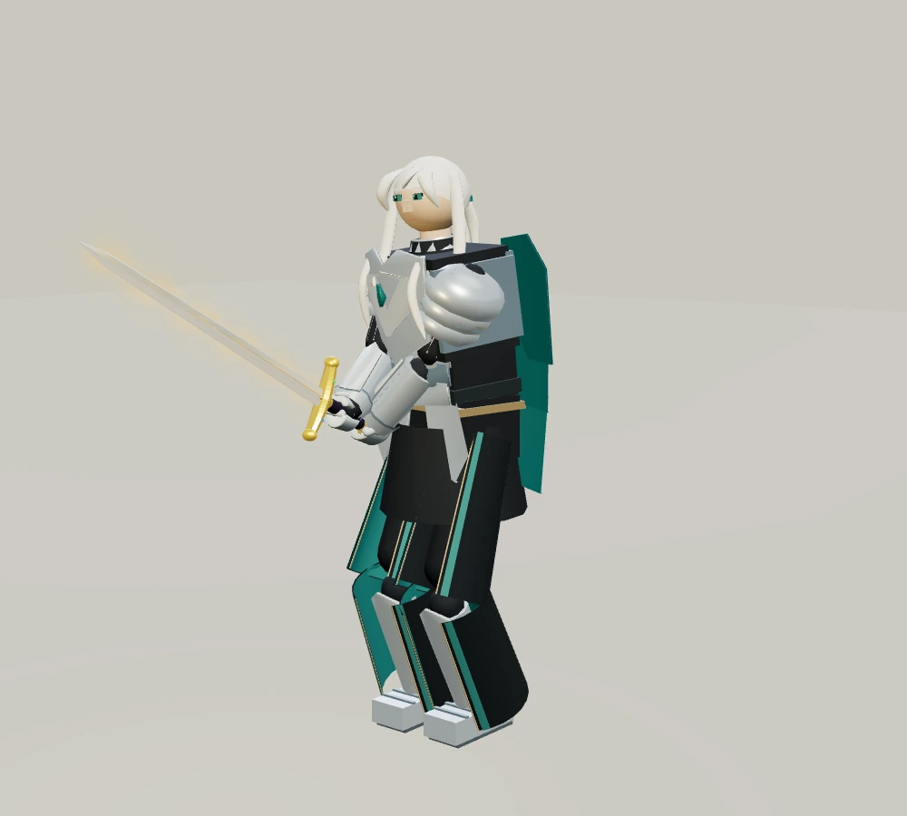
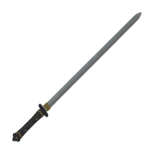
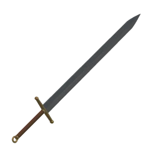

최신 · 여성 캐릭터 눈과 상체 전후 비교
적막 · 돌아온 맹세
아르토리아
아이스·아르토리아 외형 보완 전후 보기 →
은빛 갑옷과 청록 망토의 기사.
진짜 엑스칼리버를 손에 쥔 그녀가 회랑에서 기다립니다.

“이 검에 걸었던 맹세는, 아직 끝나지 않았습니다.”

사인검
레어 · 한손검
100cm · 1.00kg
별자리와 꽃잎형 장식에 담긴 벽사의 뜻.

아이스
레어 · 양손검
168cm · 3.50kg
깊은 홈을 새긴 강철날과 황동 장식.
새 검을 골라 아르토리아와 겨루기
두 검은 일반판 무기 추첨에도 등장합니다. 아르토리아와의 결투는 위 버튼으로 입장하세요. 가로 화면을 권합니다.